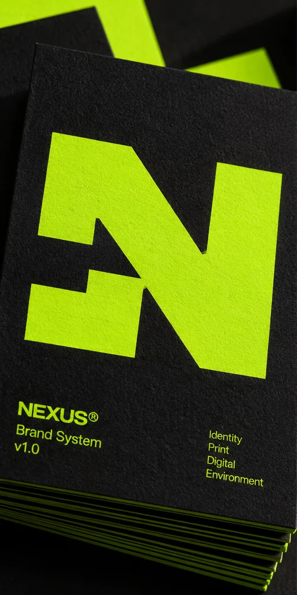
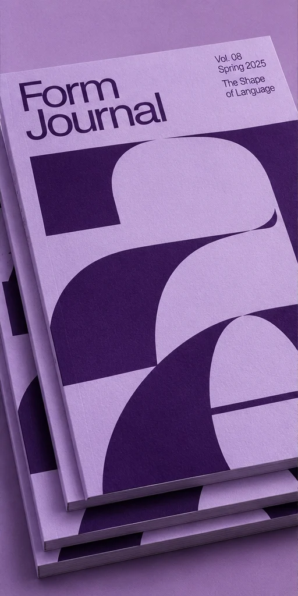

Həndəsi formalar və yüksək kontrast üzərində qurulan vizual kimlik konsepti.
PORTFEL
Brend kimliyi, redaksiya dizaynı, afişalar və yeni vizual istiqamətlər.

Həndəsi formalar və yüksək kontrast üzərində qurulan vizual kimlik konsepti.

Miqyas, boşluq və tipoqrafiyanın ritmi üzərində qurulan jurnal konsepti.

Səs dalğasının hərəkətini həndəsi formaya çevirən afişa konsepti.